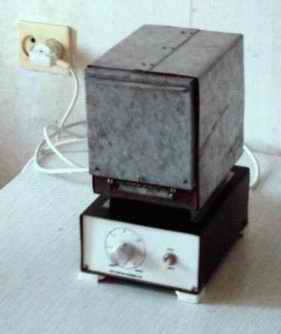
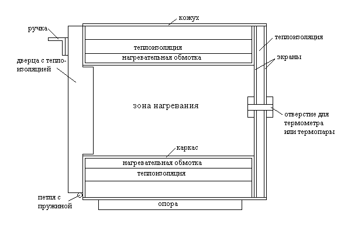
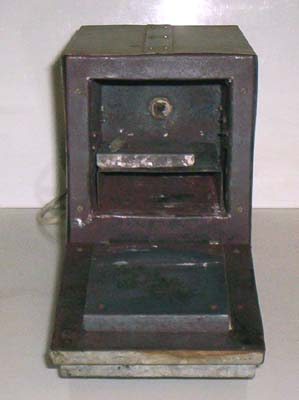
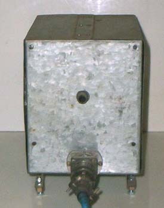
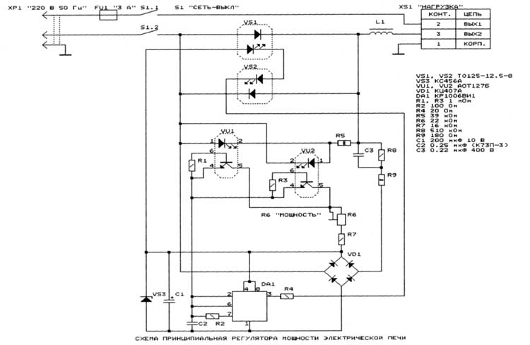
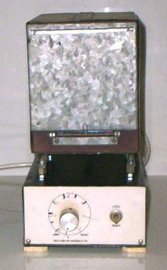
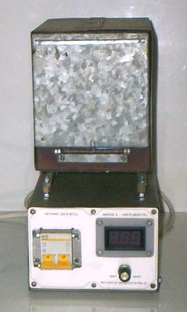

Печь сопротивления с регулятором мощности

1. Назначение
Печь сопротивления с регулятором мощности предназначена для нагревания, плавки, отжига материалов, температурных испытаний их изоляционных свойств и т. п.
2. Характеристики:
3. Конструкция печи
Упрощенный эскиз печи сопротивления показан на рис. 3.1.

Рис. 3.1. Эскиз печи сопротивления.
На каркасе (сталь толщиной 0.7 мм) намотана нагревательная обмотка (нихромовая проволока диаметром 0.4 мм). Для изоляции обмотки от каркаса использован листовой асбест. Сверху обмотка закрыта листовым асбестом и дополнительно обмотана асбестовым шнуром. Дверца сделана из стали толщиной 0.7 мм, внутрь насыпана асбестовая крошка. Дверца крепится к каркасу с помощью петли с пружиной, которая обеспечивает прижимание дверцы к каркасу. Для открывания дверцы к ней через теплоизолятор крепится ручка из стального уголка. Задняя стенка выполнена из двух стальных экранов толщиной 0.7 мм, между которыми проложена теплоизоляция из листового асбеста. Для контроля температуры в задней стенке выполнено технологическое отверстие диаметром 6 мм. Сверху печь закрывается кожухом из оцинкованного железа толщиной 0.5 мм, к которому снизу крепятся опоры из материала с низкой теплопроводностью.
После сборки печь подключается к регулятору мощности и выдерживается 3 ... 4 часа на половине максимальной мощности. Внешний вид печи показан на рис. 3.2 и 3.3.

Рис. 3.2. Печь сопротивления, вид спереди с открытой дверцей.

Рис. 3.3. Печь сопротивления, вид сзади.
4. Регулятор мощности
Для питания печи сопротивления от сети переменного тока напряжением 220 В частотой 50 Гц могут использоваться различные источники с плавной или ступенчатой регулировкой выходного напряжения, например, регулируемые автотрансформаторы или тринисторные (тиристорные) регуляторы с фазовым управлением [3]. На рис. 4.1 показана электрическая принципиальная схема регулятора напряжения на оптотиристорах.

Рис. 4.1. Схема электрическая принципиальная тринисторного регулятора мощности.
Регулировка мощности осуществляется с помощью оптотиристоров VS1 и VS2, которые включаются с необходимой задержкой относительно момента перехода сетевого напряжения через ноль (фазовый регулятор). На оптопарах VU1, VU2 собран ключ, который срабатывает в момент перехода сетевого напряжения через ноль и подключает конденсатор C2 через резисторы R6 и R7 к источнику положительного напряжения. Конденсатор C2 заряжается до напряжения, равного порогу срабатывания таймера DA1 (КР1006ВИ1). Время зарядки конденсатора определяет время задержки включения оптотиристоров VS1, VS2 и, соответственно, мощность на выходе регулятора. Таймер после срабатывания через резистор R4 выдает сигнал управления оптотиристорами. Через резистор R2 осуществляется быстрая разрядка конденсатора C2. После включения оптотиристора напряжение на нем понижается до уровня ~ 1 В, и оптопары VU1, VU2 переходят в закрытое состояние до момента очередного перехода сетевого напряжения через ноль. Узел C3, R8, R9, VD1, C1, VS3 обеспечивает питание регулятора. Дроссель L1 служит для ограничения скорости возрастания тока через оптотиристоры при их включении. На рис. 4.2 и 4.3. показан внешний вид печи с различными регуляторами мощности.

Рис. 4.2. Печь сопротивления с регулятором мощности на оптотиристорах (по схеме рис. 4.1): ступенчатая регулировка мощности и температуры.

Рис. 4.3. Печь сопротивления с регулятором мощности на тринисторах [3]: плавная регулировка мощности и температуры, цифровой вольтметр.
5. Функция магнитного экрана
Зона нагревания печи окружена со всех сторон (при закрытой дверце) двумя слоями магнитомягкого материала (сталь Ст3), который, в принципе, может выполнять роль магнитного экрана. Коэффициент подавления внешнего магнитного поля Земли равен примерно 5 ... 10. Нагревательная спираль помимо своей прямой функции может выполнять роль демагнетизирующей обмотки, чтобы существенно уменьшить остаточное магнитное поле самого стального корпуса печи.
6. Состояние разработки:
Печь сопротивления с регулятором мощности используется в лабораторных условиях для проведения экспериментов, связанных с нагревом, а также используется в технологических целях, в частности, для отжига сердечников из магнитомягких материалов [4], что позволяет существенно улучшить их магнитные свойства, в частности, для целей магнитометрии.
Ссылки:
27.08.2003
05.05.2006
19.01.2010
01.01.2025
Альтернативные источники
энергии
Компьютеры и
Интернет
Магнитные поля
Механотронные системы
Перспективные
разработки
Электроника и технология